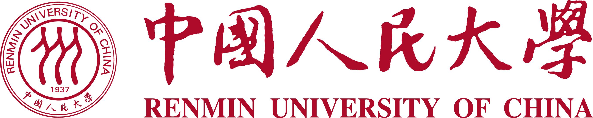

I am Ruyi Ni, an undergraduate student in the Dual Bachelor's Program of
Big Data Technology and Agricultural & Forestry Economics and Management
at Renmin University of China. My current GPA is 3.84/4.0,
ranking 1st/10 in my program.
My research interests include Large Language Model Agents,
Information Retrieval, Automated Scientific Discovery,
and Financial Technology.
I am currently working on idea-level evaluation for autonomous research
and cognitively grounded search user simulation, while also exploring model merging.
My academic background combines
solid training in algorithms, data systems, machine learning, mathematical modeling,
and financial data analysis.
🔥News
- 2026.06Our paper CAS has been submitted to CIKM 2026.
- 2026.05Our paper IDEAL has been submitted to EMNLP 2026.
- 2026.01Started an ongoing research project on sparse and low-rank subspace optimization for model merging.
- 2026.01Won a bronze medal in the MITSUI&CO. Commodity Prediction Challenge.
- 2025.10Received the National Scholarship.
📝Publications & Research Projects
Research manuscripts are listed by current status. More links will be added after public release.
EMNLP 2026 · Submitted
IDEAL: Multi-Dimensional Decoupled Idea-Level Evaluation for AutoResearch
Co-authors including Ruyi Ni · Co-first Author
LLM Agents · Automated Research · Idea Evaluation
We propose an idea-level evaluation framework for autonomous research systems.
IDEAL decomposes the pipeline into a Forge generator and a Lens evaluator,
measuring semantic diversity, contextual coverage, and literature atypicality
for generated research idea sets.
PDF (under review)
CIKM 2026 · Submitted
CAS: Cognition-Action Search User Simulation
Co-authors including Ruyi Ni · Co-first Author
Information Retrieval · User Simulation · LLM Agents
Inspired by dual-system theory, CAS explicitly models latent user cognition
and dynamically selects downstream action-generation strategies, improving
controllability and interpretability in search user simulation.
PDF (under review)
Ongoing Research
Sparse and Low-Rank Subspace Optimization for Model Merging
Ruyi Ni · Personal Research
Model Merging · Sparse/Low-Rank Optimization
I am studying methods such as TIES, DARE, and APL, focusing on reducing
task interference by transforming model parameters into sparse or low-rank
subspaces before merging.
🏅Competition Highlights
MITSUI&CO. Commodity Prediction Challenge
2025.11 - 2026.01 · Quantitative Finance · Time Series Prediction · Independent Participant
Built an ensemble prediction framework for noisy and heterogeneous global financial
time-series data. The solution combined relative-return smoothing, a
Conv2D-LSTM-Dense architecture with SE channel attention, LightGBM regression, and
defensive fallback mechanisms. Ranked in the Top 7.5% among
1,711 teams worldwide and received a bronze medal.
Optiver - Trading at the Close
2024.02 - 2024.03 · AI for Trading · Feature Engineering · Assistant Team Member
Participated in predicting Nasdaq close-price movements using order-book and
closing-auction data. The workflow included historical window features,
quantitative factor mining, hold-out time-series validation, LGBM/CatBoost
ensemble learning, and hyperparameter search. Ranked in the Top 5% among
4,436 teams and received a bronze medal.
🏆Honors and Awards
- 2025National ScholarshipNational
- 2025Outstanding Communist Youth League Member, RUCSchool
- 2025Bronze Medal · MITSUI&CO. Commodity Prediction ChallengeInternational
- 2024Da Bei Nong Excellence Talent ScholarshipSchool
- 2024Merit Student Honorary Title, Renmin University of ChinaSchool
- 2024Bronze Medal · Optiver - Trading at the CloseInternational
📖Education
2023.09 - Present
Dual Bachelor's Program of Big Data Technology and Agricultural & Forestry Economics and Management
Renmin University of China
GPA: 3.84/4.0 (Rank: 1/10)

Mathematics: Advanced Mathematics (91), Statistics (92), Operations Research Modeling and Algorithms (93)
Computer Science: Data Structures and Algorithms I (94), Data Structures and Algorithms II (94), Database Systems (91), Parallel Computing (92)
AI & Retrieval: Machine Learning (91), Introduction to Intelligent Information Retrieval (93)
💻Skills
- Programming: Proficient in C++, Python, and R; experienced with algorithms, data structures, and clean coding practices.
- Deep Learning: Familiar with PyTorch, NumPy, Pandas, multimodal LLMs, LoRA-style efficient fine-tuning, and GRPO-based optimization.
- Agents & Retrieval: Experienced with LLM agents, CoT/ReAct-style prompting, LangChain, RAG systems, and information retrieval workflows.
- Financial Data: Experienced in feature engineering, high-noise time-series modeling, factor mining, and financial prediction pipelines.
- Tools: VS Code, PyCharm, Jupyter Notebook, LaTeX, Git, Claude Code, and Codex.